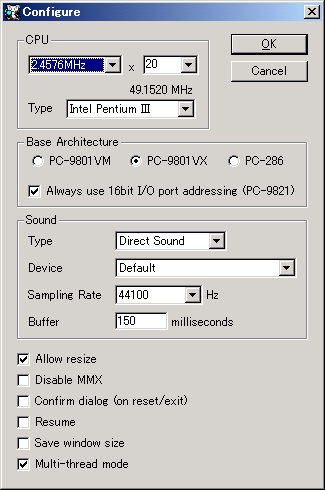

適当なフォルダに np21w_???.zip を解凍します。
ねこープロジェクト21/Wはインストーラは付属しておらず、解凍された np21w.exe (64bit環境の時は np21x64w.exe も使用可能)をそのまま起動します。
何も設定していない状態では、起動後にメモリカウントが始まり「システムディスクをセットしてください」と表示されます。
[Emulate - Configure...]を選択し 設定ダイアログを表示します。

まず、エミュレータのCPU動作を設定します。
PC-9821をエミュレーションする場合には50〜100MHz程度で動作させることが望ましいです。クロック倍率は直接入力で微調整することをおすすめします。
アーキテクチャの表示はPC-9801VXとなっていますが、実際にはPC-9821相当で動作します。「PC-9801VX以降のアーキテクチャ」という程度の意味とお考えください。詳細
動作させるアプリケーションにより処理落ちしたり フレームスキップが発生して充分にエミュレートできない場合があります。
その場合は、CPU動作設定のクロック数を下げてください。
続いてサウンド設定を行います。
マシンパワーがあれば 44KHzへ変更すると良いでしょう。それ以上はあまり意味がありません。
Bufferの値は 処理が追い付く最低の値を設定します。
環境によりますが、速いマシンであれば 50ms〜300ms, 通常で 500msくらいが目安です。
Resumeをチェックしておくと、PC-98NOTEのようにレジュームが働くようになります。
好みによりチェックして下さい。